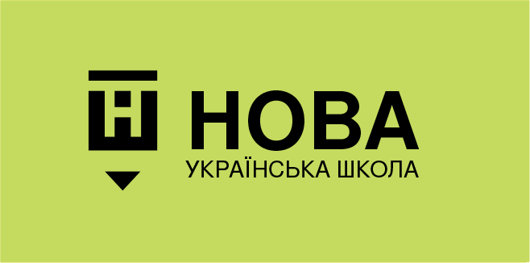

Зимовий мультфільм про справжню дружбу (до с. 99 підручника)
Запитання та завдання для обговорення мультфільму
Корисні завдання
Рахуємо сніжинки різних форм
Це завдання допоможе дитині вдосконалити навички рахунку до 10, розвинути пізнавальну активність, уміння класифікувати спільне й відмінне. Дитині пропонується порахувати та написати, скільки намальовано сніжинок різної форми. У процесі виконання завдання дитина розвиватиме математичні здібності, спостережливість та увагу. Додатково у завданні пропонується дізнатися, чому візерунки сніжинок такі різні. Пошук відповіді на таке запитання сприятиме формуванню уявлень дитини про природничо-наукову картину світу, розвитку дослідницьких умінь через підтримку допитливості й інтересу до спостережень та експериментів.
Вивчаємо сніжинки: шукаємо спільне (до с. 99 підручника)
Знаходимо у сніжинок спільне, класифікуємо їх
Зима-білосніжка (до с. 100 підручника)
Добірка завдань, які допомагають систематизувати знання дітей про ознаки зими